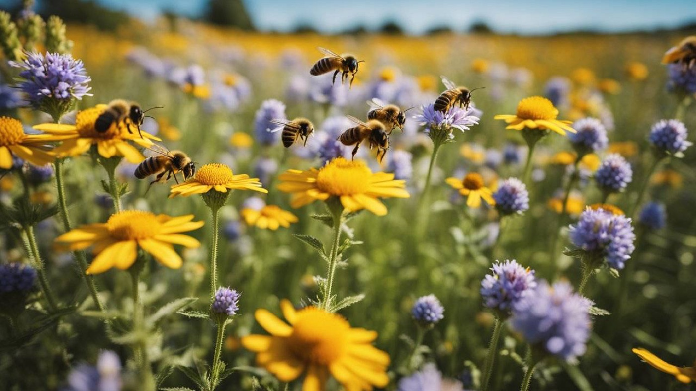

“¿Qué ocurre cuando intentamos crear o proteger una forma de vida cuya percepción no podemos experimentar?” Experiencia audiovisual multiusuario donde el teléfono móvil opera como prótesis táctil de vuelo conectada vía MQTT.
Partiendo de la noción de Umwelt de Jakob von Uexküll, cada organismo habita una burbuja perceptual cerrada. Una abeja melífera navega en espectro ultravioleta y lee luz polarizada; el humano, al intentar interactuar con su entorno a través de una pantalla capacitiva, traduce el afecto y el cuidado en coordenadas flotantes (touch.x, touch.y), diámetro de contacto (touch.d) y paquetes WebSocket.
La máquina no comprende la intención de cuidar: solo procesa señales. Al insistir o presionar de más, el polen se dispersa en turbulencia y el ecosistema sufre necrosis y rechazo sonoro.
[02 · PROCESO Y ARQUITECTURA]
Prótesis móvil y emancipación
Entrada física (tacto.js): lectura a ~60 Hz de giroscopio (pitch/roll para vuelo aéreo), pinza de dos dedos (zoom al espectro ultravioleta) y diámetro/velocidad táctil.
Motor sonoro (8 capas en audio_bee/): mezcla reactiva mediante Web Audio API (bosque, abeja, mala_abeja, pálpito, máquina, alarma, robot, pago).
Clímax autónomo: al alcanzar 80% de floración colectiva, el jardín entra en fase autónoma donde la criatura técnica escapa del control táctil humano.
Registro visual
Clic para ampliar completo

Imaginario visual de polinización y transición al espectro UV